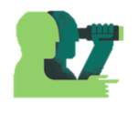

My Life
Open PDF VersionEducation
Work Experience
Leadership
Skills
B.S. Information | Minor in Science, Technology, Society
University of Michigan, School of Information, Ann Arbor, MI (2016-present)
Specialization in User-Experience Design
GPA: 3.9/4.0
Related Coursework: HCI, Digital Product Design, Needs Assessment Usability Evaluation, Interactive Application Building, Interaction Design Studio, Data Structures and Algorithms, Introduction to Statistics and Data Analysis
UX Research Course Instructional Assistant | UM School of Information
October 2019 - Present
Worked with graduate student instructors and professors to develop course curriculum and teach students course concepts and good research practice
Concepts: Competitive Analysis, Heuristic Evaluations, Survey & Interview Protocol, Personas, Scenarios, Usability Testing, Recommendations
Skills: Teaching, Understanding Good Research Practice, Conflict Resolution
Product Design Intern | Stats Perform
June 2019 - August 2019
Conducted user and usablilty research and competitive analysis to prove business benefits and viability of tennis widgets in the sports statistics market
Designed public-facing widgets through Sketch to provide users with real time tennis statistics and presented prototypes to executive board
Skills: Sketch, InVision, UX Research Methodologies, Interviewing, Wireframing
Assistant Researcher in Social Media | UM School of Information
January 2018 - May 2019
Published and presented peer-reviewed paper discussing style and popularity of insulting tweets between major politicians in India at HICSS-53
Skills: Academic Writing, Research, Public Speaking, Data Entry, Collaboration
Assistant Researcher | UM Transportation Research Institute
October 2017 - September 2018
Implemented survey theory to design Qualtrics surveys for research studies to determine bicycle and pedestrian traffic patterns in metro Detroit
Wrote an academic paper discussing the benefits of the video game format to teach practical and academic concepts and foster long term information retention
Link to PDF of paper here
Skills: Research, Leadership, Collaboration, Survey design, Educational Video Game Design, Gamification
Office Assistant | UM Housing and Mcard Center
September 2016 - January 2018
Served as the first point of contact for students and families about University policies/services regarding university identification, on-campus housing, student meal plans, and other topics
Skills: Communication/Customer Service, Multi-Tasking, Data Entry, Problem Solving
Digital Product Marketing Team | UM Center for Value Chain Innovation
December 2018 - April 2019
Collaborated with a team to build the Center for Value Chain Innovation based in the Ross School of Business
Performed research on information technology terms and designed web architecture, Ebooks, and white papers to make knowledge accessible
Michigan Manzil Dance Captain
June 2017 - May 2019
Competed nationally and performed at local events
Choreographed and taught dance routines, conceptualized performances and props, and organized logistics for team of 24
Designed the team website: access link here
Girl Up Michigan Logistics Coordinator:
June 2016 - December 2018
Secured venues for meetings and events, updated the executive board calendar, oversaw monthly donor subscriptions, and created and managed events
Designed the club website: access link here
Computer Skills
Sketch, Figma, InVision, Web Design, Digital Product Design, HTML5, CSS3, C++, Python, Django, GitHub, R, SqLite, Qualtrics, Statistical Analysis, Research, Microsoft Office, Data Entry
Certificates/Badges
Introduction to HTML5 by University of Michigan on Coursera
Microsoft Educator Community Badge - Leading Change: Go Beyond Gamification
Languages
English
Conversational German